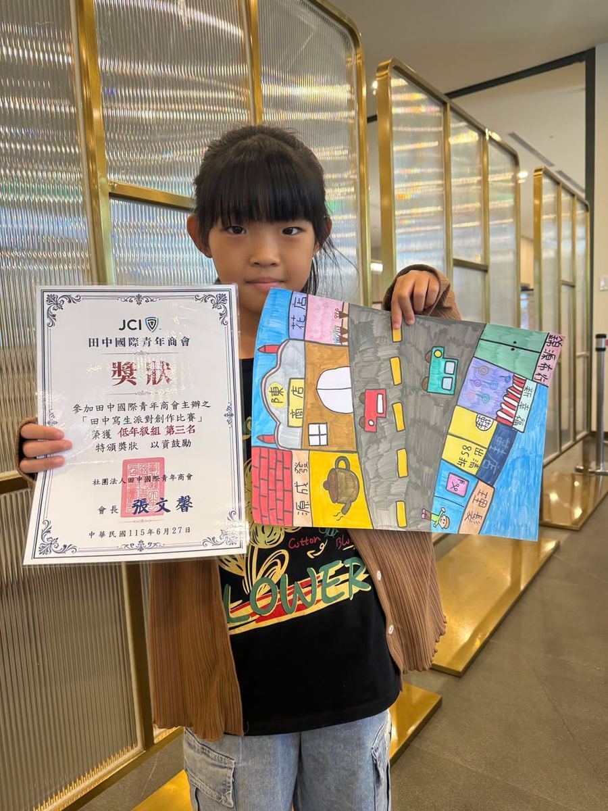
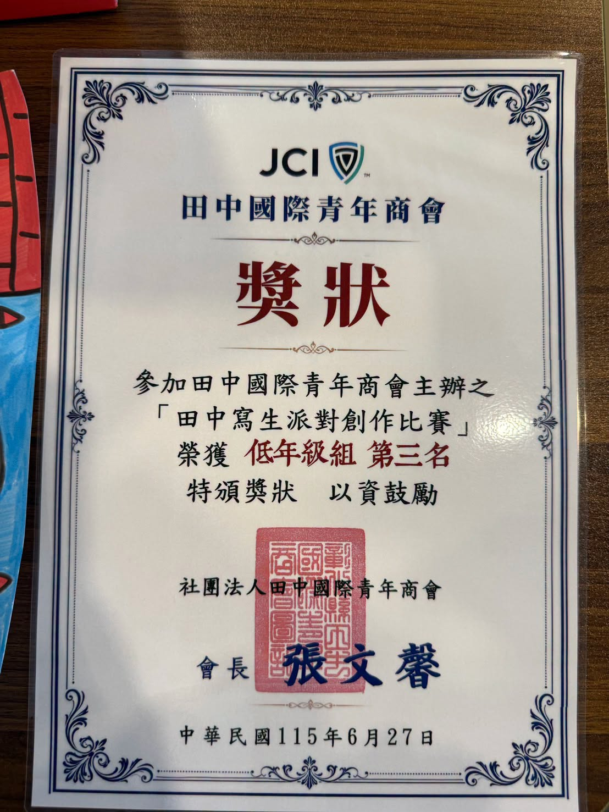
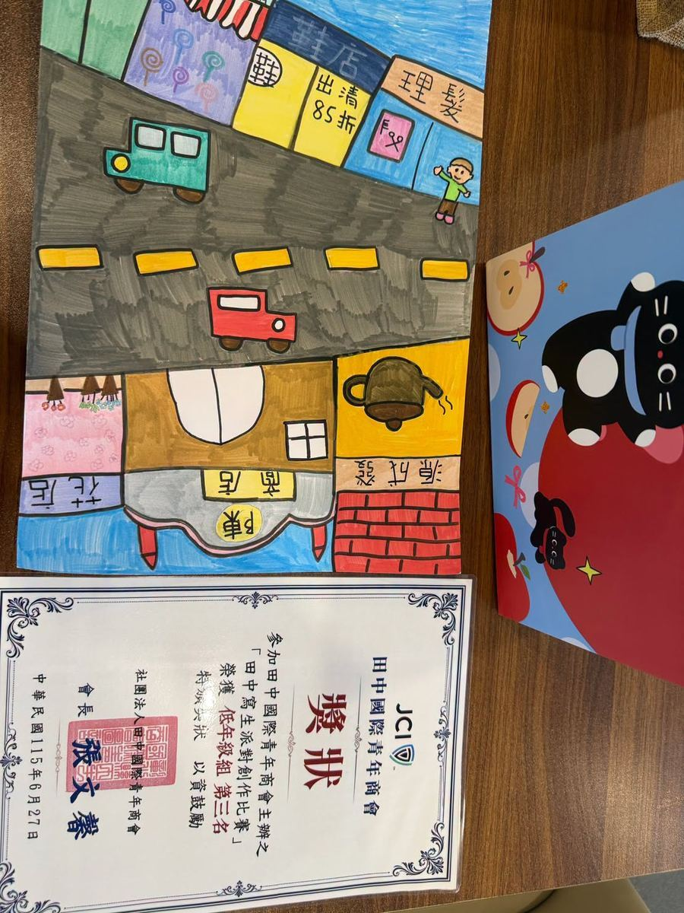

Wonderful news from Hsinmin Elementary! Hsieh Yi-en, a Grade 2 student from Class 201, participated in the "Tianzhong Plein Air Painting Party" held at Fuyyu Garden Hotel on June 27 and won a remarkable 3rd place. This was a drawing competition open to students from all schools across Tianzhong Township.
Yi-en chose to paint the beautiful Tianzhong Train Station, capturing the historic architecture in her own unique and expressive style. Her artwork stood out among all the entries and earned the admiring approval of the judges. We are so proud of this young artist!
This achievement is not only a recognition of Yi-en's artistic talent and hard work — it also shows the wonderful creativity that is nurtured right here at Hsinmin Elementary. Congratulations, Yi-en! Keep painting and keep shining! 🎨🌟
🎨 恭喜！謝怡恩同學於田中寫生派對榮獲第三名！ 🎨
新民國小201班的謝怡恩同學，參加了6月27日在馥御花園酒店舉辦的「田中寫生派對」全鄉繪畫比賽，並榮獲優異的第三名！
怡恩同學以田中火車站為主題，用自己獨特的風格描繪出車站的美麗樣貌，作品在眾多參賽者中脫穎而出，深獲評審肯定。
這份榮耀不僅是對怡恩藝術才能與用心努力的肯定，更展現了新民國小孩子們豐富的創意與表現力。恭喜怡恩，繼續畫下去，讓你的畫筆繼續閃耀！🌟
Words About Art & Achievement英語學習角 · 和藝術與成就有關的小單字
Six key words from this story, each with an example sentence — then a five-question quiz. Tap 🔊 to listen.
六個關鍵字，每個字配一個例句，最後有五題小考。點 🔊 聽發音。
情境：兩位同學聊到怡恩在繪畫比賽得獎的事。